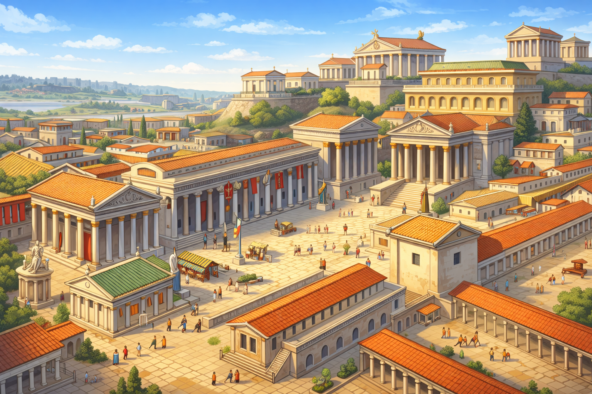
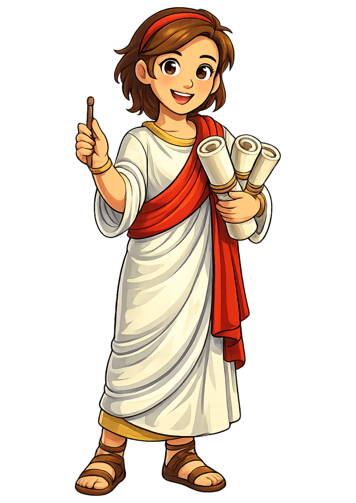

“Salve! I am Cato, your clever guide through ancient Rome.
My name means ‘wise’, so listen closely! This adventure will teach you how
Romans wrote numbers, how they lived, and how brave heroes like you can
defeat trickster monsters in the Arena of Numbers.”
Did you know?
Cato is pronounced KAH-toh. In Classical Latin the letter “C” always
sounds like a hard “k”, just like in the word “cat”.
You are a young scribe in ancient Rome, chosen by the Senate to keep
track of armies, festivals, and treasure. To prove yourself worthy,
you must master Roman numerals and record every victory and festival correctly.
But Rome is full of magical creatures. A playful trickster called Faun
has enchanted the numbers in the Arena. Each time you answer a question
correctly, his magic grows weaker. Each time you make a mistake, he grows stronger.
Every battle you win unlocks new secrets about Rome’s history and language.
You will learn words like legion (a large Roman army),
Senate (the council of leaders), and
scribe (a person who writes official records).
How to use this adventure
Begin with the Story and Tutorial to learn the basics.
Choose your hero on the Character page.
Visit History to explore how Rome grew and changed.
Practise in Tools using the Converter, Builder, and Matching games.
Enter the Arena to battle Faun with your maths skills.
Download your Certificate and check the High Score board.

Tutorial
“I, Cato the Faun, will teach you the rules of Roman numerals.
Learn them well, and you will be ready to challenge me in the Arena!”
Rules: I = 1, V = 5, X = 10, L = 50, C = 100, D = 500, M = 1000.
Subtractive forms: IV = 4, IX = 9, XL = 40, XC = 90, CD = 400, CM = 900.
Modern use: Roman numerals still appear on clocks, in book chapters,
and at the end of films (for example, MMXXVI = 2026).
How to use this site (Step‑by‑step)
Read the rules for Roman numerals at the top of this page.
Look at the clock and say each numeral out loud from I to XII.
Use the Converter to practise turning numbers into numerals and back.
Use the Builder to drag I, V, X, L, C, D, M and see how they combine.
Play the Matching game to speed up your recognition.
Enter the Arena when you feel ready to battle with maths.
Choose Your Champion
Cato says:
“Every hero needs a guide. Choose the champion who feels most like you.
I will walk beside you either way!”
Select a character to guide you through the Arena of Numbers.
Centurion
A brave Roman officer who leads a century of 100 soldiers.
The Centurion loves bold challenges, quick battles, and shouting numbers
across the Arena so everyone can hear.

Scholar
A thoughtful student from the great libraries of Rome.
The Scholar prefers careful thinking, clever strategies, and
solving tricky numeral puzzles before stepping into the Arena.
History & Background
Cato whispers:
“Rome did not appear in a single day. It grew from a tiny village
beside a river into a huge empire across three continents. Let me
show you how it happened!”
0. Quick Facts
Ancient Rome began as a small town by the River Tiber in Italy.
Romans spoke Latin and used Roman numerals instead of our number system.
At its largest, the Roman Empire stretched across Europe, North Africa, and the Middle East.
Roman ideas about roads, laws, buildings, and calendars still affect our lives today.
Many English words come from Latin, including aquatic, video, and laboratory.
1. Introduction to Ancient Rome
Ancient Rome was one of the most powerful civilizations in world history.
It started as a tiny village of farmers and grew into a busy city full of
markets, temples, and bath houses. Romans were famous for their strong armies,
clever engineers, and love of stories and myths.
2. When was Ancient Rome?
The story of Rome stretches over more than one thousand years.
It begins around 753 BCE (before the common era) with legends of
twin brothers, Romulus and Remus, and continues until about 476 CE
when the western part of the empire collapsed.
3. How did Rome Begin?
According to legend, Rome was founded by Romulus after a great argument
with his twin brother Remus. The brothers were said to have been raised
by a she‑wolf. Romulus chose a hill by the River Tiber, drew a sacred
boundary, and slowly a village grew into the city of Rome.
4. Roman Culture
Roman culture mixed ideas from many peoples, including the Greeks and Etruscans.
Romans loved theatre, poetry, speeches, and colourful mosaics on their floors.
They enjoyed sports like chariot racing and gladiator games, and they valued
discipline, bravery, and loyalty to their family and city.
5. The Forum
The Forum was the busy heart of Rome. It was an open square surrounded by
important buildings. People went there to shop, listen to speeches, visit
temples, and meet friends. If you stood in the Forum, you could hear news
from all corners of the empire.
6. History of Ancient Rome
Historians usually divide Rome’s history into three big periods:
the Kingdom, when kings ruled; the Republic,
when citizens elected leaders; and the Empire, when powerful
emperors controlled vast lands.
7. Life in Ancient Rome
Daily life depended on who you were. Rich Romans lived in large houses with
courtyards, servants, and fancy dinners. Poor Romans often lived in tall,
crowded apartments. Children played games with balls, dolls, and toy soldiers,
and many went to school to learn reading, writing, and numerals.
8. The Roman Family
The Roman family was led by the pater familias, usually the oldest man.
He was responsible for protecting everyone and making important decisions.
Families included parents, children, grandparents, and sometimes enslaved people
who worked in the home.
9. Typical Roman Activities
Romans might start their day with a quick bread breakfast, visit the baths,
work in shops or offices, and then relax by watching performances or sports.
Children played knucklebones, marbles, and board games similar to modern ones.
10. Roman Food
Roman meals often included bread, olives, cheese, and fruit.
Rich families might eat fish, meat, honey cakes, and exotic spices
from far‑away provinces. A favourite sauce called garum was made
from fermented fish and added to many dishes.
11. Roman Customs
Romans celebrated many festivals to honour their gods, such as Saturnalia,
a winter feast with gift‑giving and games. They wore togas for special
occasions and used wreaths of leaves as symbols of victory and honour.
12. Rome Was Not Built in a Day
The saying “Rome was not built in a day” reminds us that great things take time.
Rome’s roads, aqueducts, and grand buildings took many years and thousands of
workers to complete. Your learning journey will also grow step by step.
13. Roman Mythology
Romans believed in many gods and goddesses, such as Jupiter, Juno, Mars, and Venus.
They told stories to explain the world, from how the seasons changed to why
storms shook the sky. Many planets in our solar system are named after Roman gods.
14. The Roman Legion
A legion was a huge group of Roman soldiers, sometimes over 5,000 men.
They trained hard, marched long distances, and built forts and roads as they went.
Their discipline and organisation helped Rome win many battles.
15. Roman Roads
Romans built straight, strong roads made of layers of stone.
These roads linked distant towns and made it easier to move
armies, trade goods, and share news. The saying “All roads lead
to Rome” comes from this amazing network.
16. How Was Rome Ruled?
Rome changed its style of government over time. Under kings,
power was held by one ruler. During the Republic, many citizens
could vote and elect leaders. In the Empire, emperors held the
strongest power, but still used laws and officials to manage the
huge territories.
17. Who Was Julius Caesar?
Julius Caesar was a brilliant general and politician who helped
bring an end to the Roman Republic. He conquered lands like Gaul
(modern France), became very popular, and was eventually made
“dictator for life”. Some senators feared he had too much power
and plotted to assassinate him.
18. Empire
After Julius Caesar’s death, his adopted heir Octavian became
the first emperor, taking the name Augustus. Under the empire,
Rome reached its greatest size and enjoyed long periods of peace,
known as the Pax Romana, or “Roman Peace”.
19. Republic
The Roman Republic was a time when citizens chose leaders to
represent them. There was a Senate of wealthy men, and different
assemblies for voting. Although not everyone was treated equally,
ideas from the Republic helped inspire later democracies.
20. Downfall – How Did the Empire End?
Over time, the western Roman Empire faced many problems: weak
rulers, expensive wars, and attacks from invading groups.
In 476 CE, the last western emperor was removed. The eastern
half, called the Byzantine Empire, continued for almost another
thousand years.
21. What Was the Rest of the World Like?
While Rome grew, many other cultures flourished. In China,
the Han dynasty built sections of the Great Wall. In India,
powerful kingdoms created beautiful temples. In the Americas,
early civilizations like the Maya were developing their own
writing and calendar systems.
22. Why Ancient Rome Still Matters Today
Rome’s ideas about laws, government, engineering, and language
still shape our world. Many modern buildings copy Roman arches
and columns, and our months and numerals have Roman roots.
Learning about Rome helps us understand where many of our own
customs and inventions came from.
23. Modern Rome in the Modern World
Today, Rome is the capital of Italy and a busy modern city.
Visitors can walk past ancient ruins like the Colosseum and
Forum, then enjoy gelato and modern shops nearby. It is a
place where old and new sit side by side.
24. How to Use the Chapter Buttons
The three chapter buttons below take you on longer journeys
through Rome’s past. Each chapter focuses on a different time:
the Kingdom, the Republic, and the Empire. You can read them
in any order, but many learners like to start at the beginning.
“Type a regular number, like 27, and press Convert
to see its Roman numeral (XXVII). Or type a Roman
numeral, like XL, to see the number 40.
Try to guess the answer before the converter shows it!”
Try it:
Drag‑and‑Drop Builder
“Welcome, Roman! Drag the symbols I, V, X, L, C, D, and M into the box
to build your own numerals. Watch how the value changes as you add or
remove symbols. Can you build the number MMXXVI?”
Drag symbols to build a Roman numeral and see its value.
I
V
X
L
C
D
M
Matching Game
“Here is a quick challenge! Drag each Roman numeral into the
box that shows its number. Remember: I is 1, V is 5, and X is 10.
Try to match them all without a single mistake.”
Drag Roman numerals to match the numbers.
I
V
X
V (5):
I (1):
X (10):
Arena Battle
Cato explains:
“In the Arena, your hero faces me, the trickster Faun. Each correct Roman numeral
hits me. Each mistake hits you. Survive ten questions or defeat me to win the round!”
Level 1.
Total score: 0
Each battle has up to 10 questions. Correct answers damage the monster, wrong answers hurt you.
Hero HP: 5
Monster HP: 5
Round score: 0 / 10
High Score
Cato challenges you:
“Here you can see the bravest numeral heroes. Can you beat their scores?”
After each victory in the Arena, you can add your name and country
to this board. Only polite words are allowed.